Introductions to time series
Simple Time Series Models
\[ \{ x_1,x_2,x_3,\dots,x_n \} \]
Equally spaced t = {1,2,3,4,5,6}
Equally spaced w/ missing value t = {1,2,3,4,6}
Unequally spaced t = {2,4,7,8,9} [Quite Common for Ecologists!]
Our time interval can be anything — seconds, minutes, days, months, years, etc.
ts() turns vectors into time series objectts.plot() plots time series objectsLet’s look at the arguments of ts():
ts(data,
start, end,
frequency
)data = a vector of the response variable over timestart = the start of the time seriesend = the end of the time seriesfrequency = the number of observations per unit time
frequency = 1frequency = 12#Load the Nile dataset
data(Nile)
class(Nile) #ts object already!## [1] "ts"#It's easy to turn a ts object back into a regular dataframe
Nile <- data.frame(Y=as.matrix(Nile), date=time(Nile))
#Look at the data
head(Nile) ## Y date
## 1 1120 1871
## 2 1160 1872
## 3 963 1873
## 4 1210 1874
## 5 1160 1875
## 6 1160 1876#Looks like our response variable is yearly!
#Now let's turn it back into a timeseires... for the example
#Turn it into a timeseries
Nile.ts <- ts(data = Nile$Y, start = 1871, end = 1970, frequency = 1) #our data will be column 'Y', the discharge!And frequency is 1 since it is measured once a year!
ts.plot(Nile.ts) #ts.plot() plots time series objects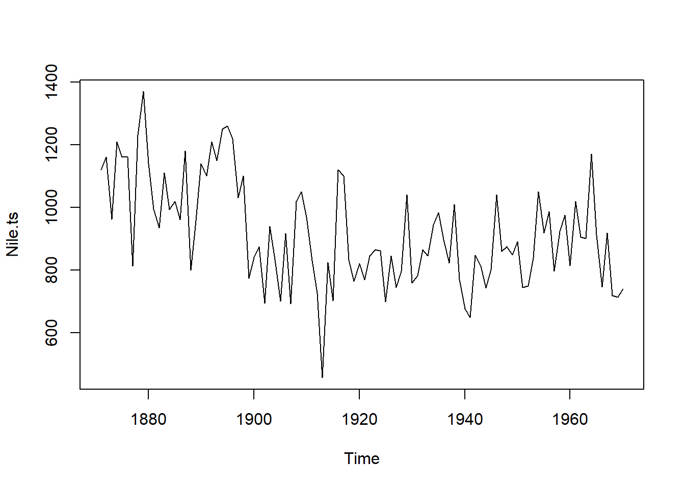
ts.plot() on a non-time
series object?If you give R a variable as a vector, it will plot it as a time series. Though, note the year is no longer shown on the x-axis. So we would need to know what the time equivalent is for each increment of the x-axis.
#Plot our original dataframe that wasn't a timeseries object
ts.plot(Nile$Y) #remember we plot our response variable, Y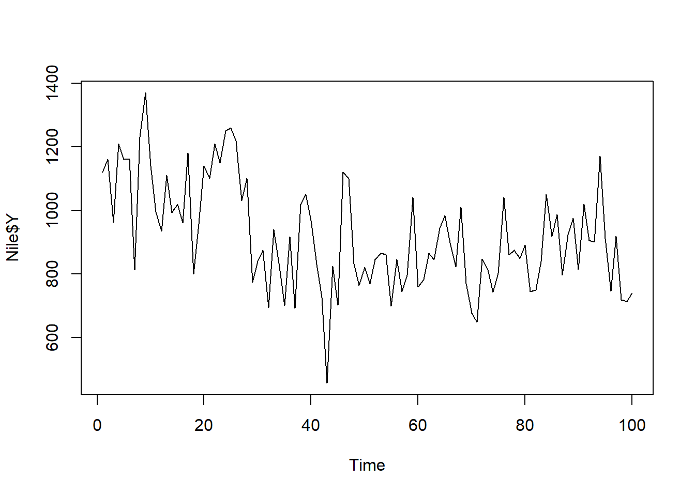
#Load the beavers dataset from R
data(beavers) #We'll work with beaver1 :)
#Look at the data
head(beaver1)## day time temp activ
## 1 346 840 36.33 0
## 2 346 850 36.34 0
## 3 346 900 36.35 0
## 4 346 910 36.42 0
## 5 346 920 36.55 0
## 6 346 930 36.69 0summary(beaver1) ## day time temp activ
## Min. :346.0 Min. : 0.0 Min. :36.33 Min. :0.00000
## 1st Qu.:346.0 1st Qu.: 932.5 1st Qu.:36.76 1st Qu.:0.00000
## Median :346.0 Median :1415.0 Median :36.87 Median :0.00000
## Mean :346.2 Mean :1312.0 Mean :36.86 Mean :0.05263
## 3rd Qu.:346.0 3rd Qu.:1887.5 3rd Qu.:36.96 3rd Qu.:0.00000
## Max. :347.0 Max. :2350.0 Max. :37.53 Max. :1.00000#Subset out only the first day
beaver1 <- beaver1[which(beaver1$day == 346),] #Take all the data on day 346
#We'll be looking at beaver temperatures over time!
#Turn it into a timeseries
beaver1.ts <- ts(data = beaver1$temp) #our data will be the temperature.
ts.plot(beaver1.ts) #ts.plot plots time series objectsSometimes with some good bookeeping it’s easier to just work with the vectors instead of time series objects :)
So we’ve talked a ton about covariance or, more commonly correlation, which is the standardized version of covariance. And when we talk about covariance and correlation, we have typically talked about how two separate variables (e.g. x and y) are correlated.
Covariance:
\[ cov_{x,y} = \frac{\Sigma(x_i - \bar{x})(y_i - \bar{y})}{N-1} \] Correlation:
\[ cor_{x,y} = \frac{cov_{x,y}}{\sigma_x\sigma_y} \] Remember that correlation is bounded by -1 and 1 \[ -1 < cor_{x,y} < 1 \]
Instead of the correlation between two variables \(x\) and \(y\), autocorrelation is the correlation between a variable \(x\) at state (for us, this will be time!) \(t\), \(x_t\) compared to itself at a previous state, \(x_{t+k}\). Where \(k\) is our lag, which is how far out in time we compare x to its previous self.
Autocorrelation: \[
cor_{x_t,x_{t+k}}
= \frac{cov_{x_t,x_{t+k}}}{\sigma_{x_t}\sigma_{x_{t+k}}}
\] \[
-1 < cor_{x_t,x_{t+k}} < 1
\]
So when we want to visualize autocorrelation within our time series, we use an autocorrelation function (ACF). The ACF measures the correlation of a time series against a time-shifted version of itself. And if we use the acf function in R on our time series, it will show us a correlogram which is going to look something like this:
Blank Outputs for the ACF() function
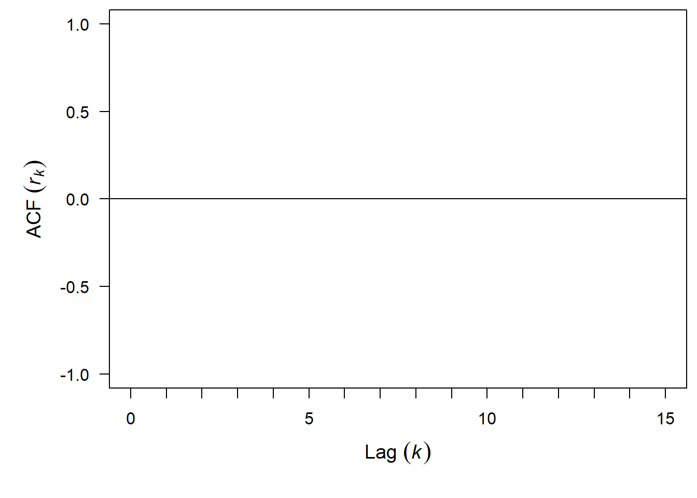
What is the ACF when lag = 0?
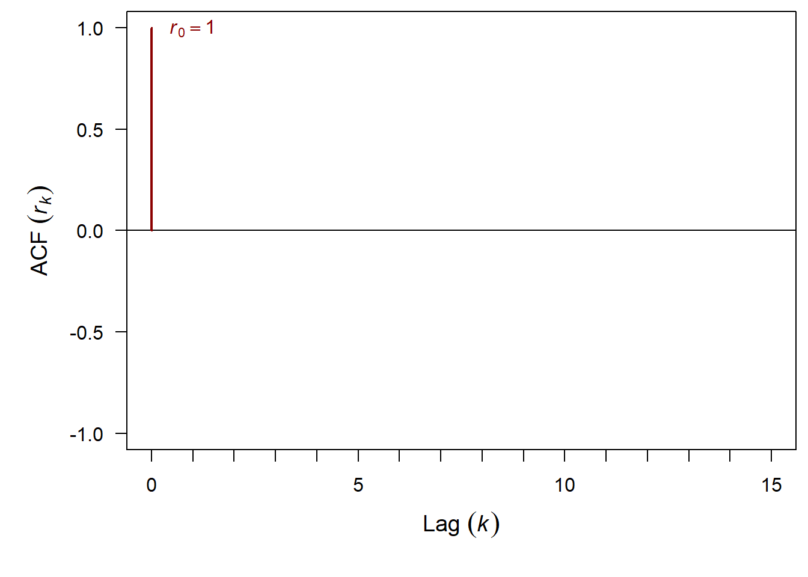
And finally we can add in 95% confidence intervals
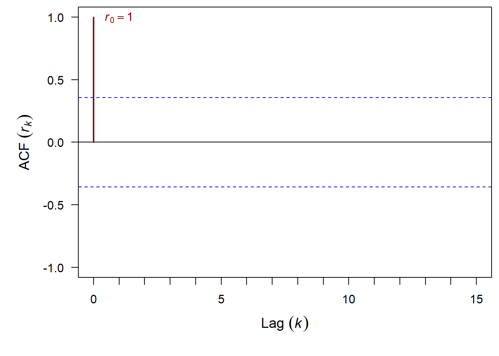
So for a simple linear relationship, this is what the ACF plot looks like. As the lag increases, the ACF gets lower. However, throughout the 20 lags on the ACF plot, there is still significant autocorrelation.
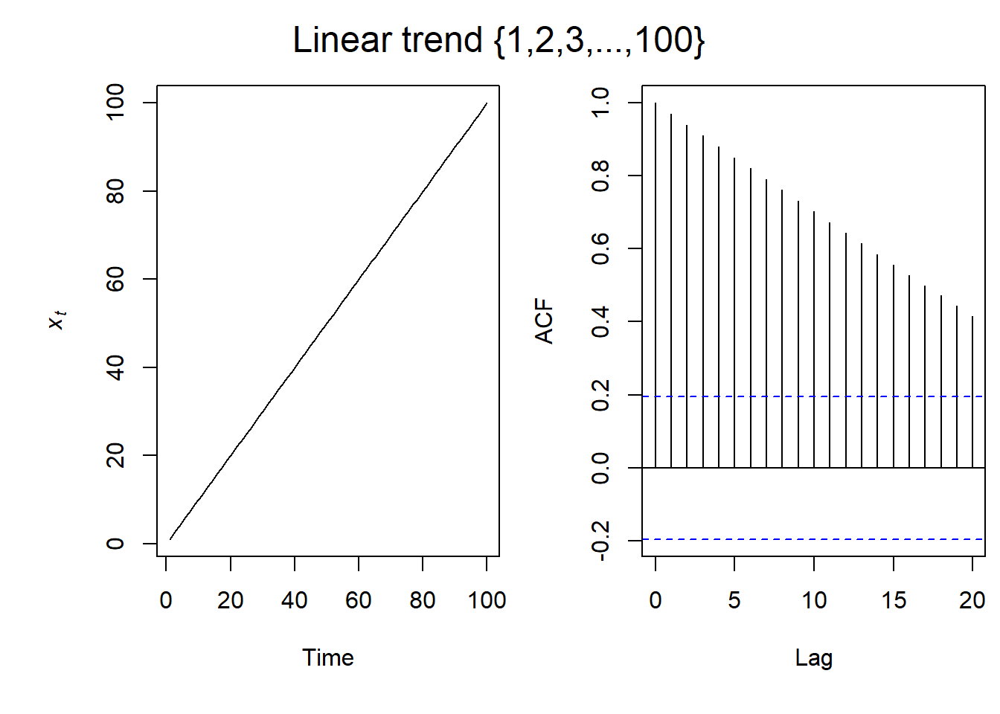
With sinusoidal data (imagine seasonal or night/day time series data), our ACF plot is also sinusoidal. And here we get periods of negative autocorrelation.
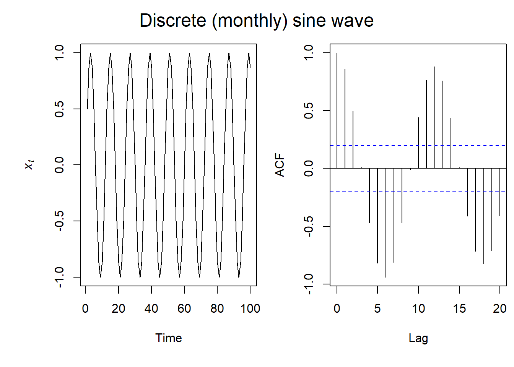
If we combine the previous two plots, we see that again our ACF plot is also sinusoidal, but the intensity of the autocorrelation dampens with time as a result of the linear relationship.
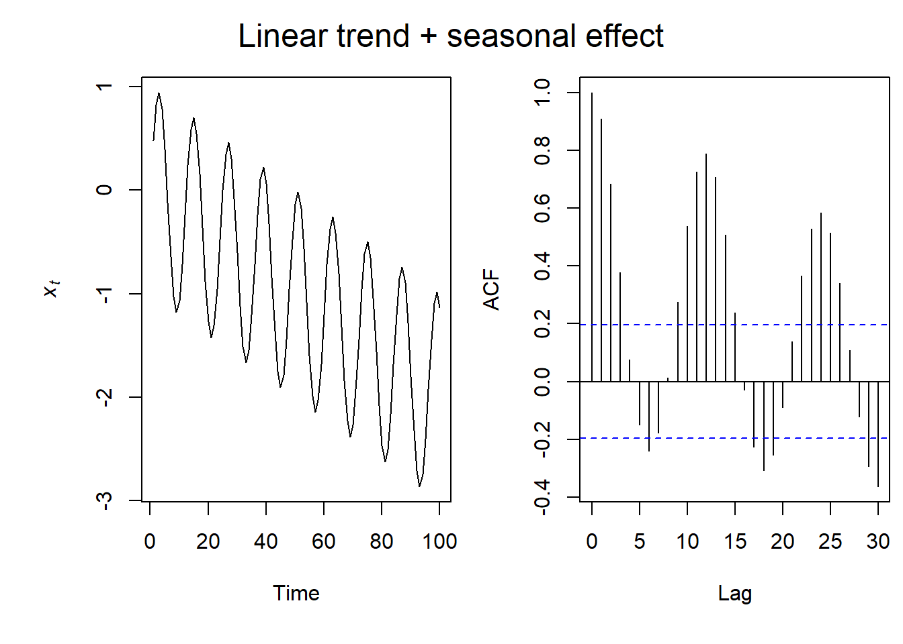
We will use the acf() function in R
Let’s return to the beavers!
ts.plot(beaver1$temp) #Plot the time series of beaver temperature again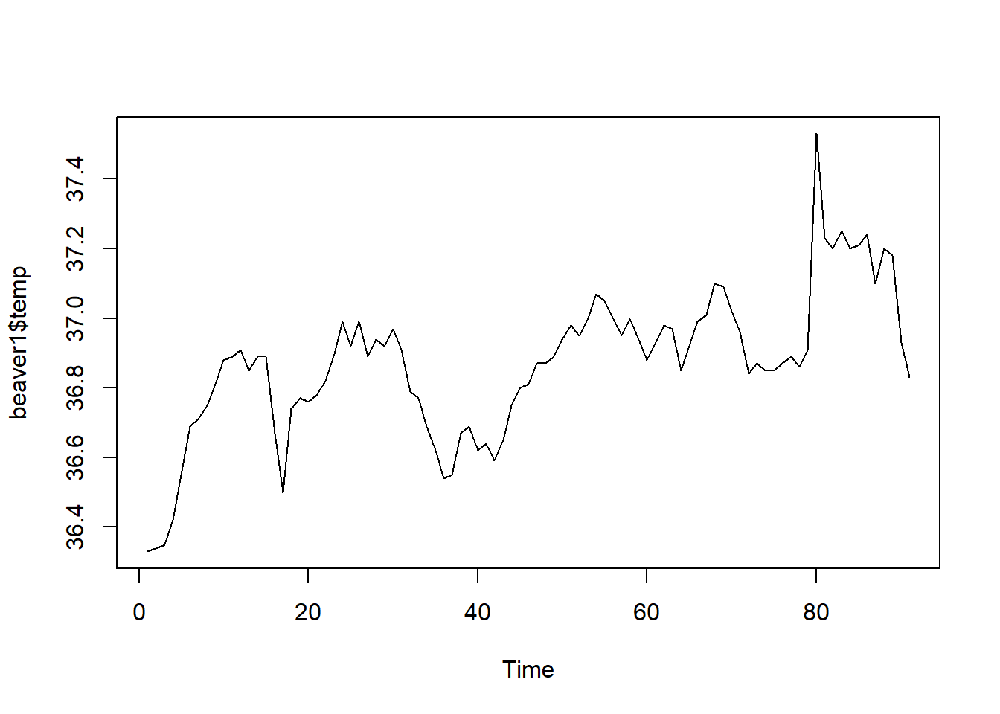
acf(beaver1$temp)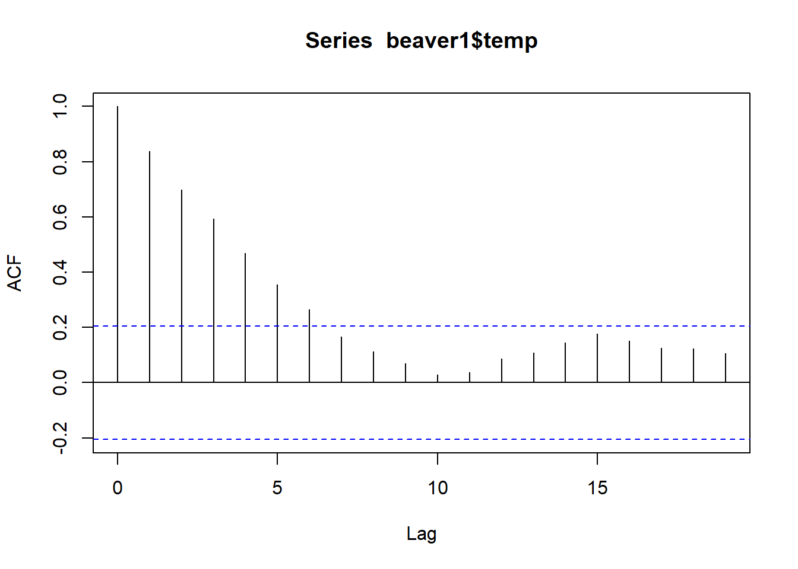
So when we are looking at the ACF of beaver 1, at lag 7, the ACF is no longer significant. So at lag 7 (which is 70 minutes as each lag here is 10 minutes), the temperature is no longer autocorrelated to the original.
Moving onto something a bit more complicated- the partial autocorrelation function (PACF).
But before we go into what the partial autocorrelation function is, we’re going to go back to some foundational math. Don’t worry–it’s from elementary school.
So if you remember the transitive property is where:
If \(A = B\) and \(B = C\), then we know \(A = C\).
We can take this a step further to say:
If \(x \propto y\) and \(y \propto z\), then \(x \propto z\)
And finally, in a case of time series we can start to think about partial autocorrelation:
If \(x_t \propto x_{t+1}\) and \(x_{t+1} \propto x_{t+2}\), then \(x_t \propto x_{t+2}\)
The PACF measures correlation between \(x_t\) and \(x_{t+k}\) with the linear dependence of the in-between time steps removed.
We can do this in R using the pacf() function
Once again, the beavers
BUT FIRST A WARNING
Our acf() plots always start at where Lag = 0, so they
will always have a ACF = 1.
Our pacf() plots always start at Lag = 1, so keep this
in mind!
pacf(beaver1$temp)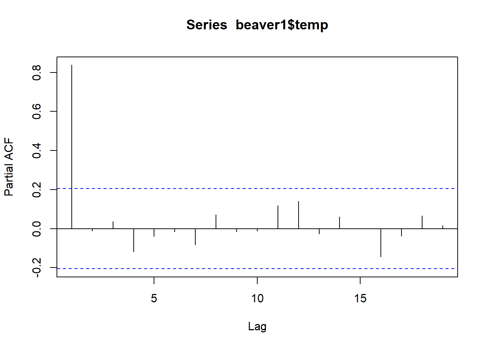
Remember our beaver had a lot of autocorrelation on our ACF plot. But when we plot the beaver’s temperature in a PACF plot, we see that without those interdependencies, the correlation between each 10 minute measurement, we only have autocorrelation one lag out.
Let’s look at some more examples, this time we’ll look at phytoplankton in Lake Washington.
library(MARSS) #load up the MARSS package which is home to the phytoplankton data
data(lakeWAplankton) #read in the data
#Data Management
phyto <- lakeWAplanktonTrans #Give it a name to keep the original data structure in tact
phyto <- phyto[phyto[,"Year"] > 1975,] #Subset to years greater than 1975 (missing data in early years)
head(phyto) #Our data is in monthly increments now!## Year Month Temp TP pH Cryptomonas Diatoms
## [1,] 1976 1 -1.2012874 -0.3480231 -0.8661613 NA 1.022903
## [2,] 1976 2 -1.2946653 -0.4863574 -0.8755319 NA 1.079538
## [3,] 1976 3 -1.4346066 -0.4503207 0.3004814 -2.9775611 1.369706
## [4,] 1976 4 -0.9069205 -0.7204020 0.5019498 -2.1642828 1.090324
## [5,] 1976 5 -0.1485269 -0.8697410 0.7409007 -0.4445590 1.069123
## [6,] 1976 6 0.4326375 -0.7237925 0.4521151 -0.1033656 1.140803
## Greens Bluegreens Unicells Other.algae Conochilus Cyclops
## [1,] -0.7603856 -0.53210594 -0.3422633 -0.2146689 NA -2.4643910
## [2,] -0.8254301 -0.36387046 -0.2828574 -0.8125118 NA -2.3121852
## [3,] -0.6360840 -0.61361753 0.4062675 0.3392094 NA -0.6387580
## [4,] -0.9826418 -0.29920680 1.0966412 -0.2206539 -1.4602890 0.7801380
## [5,] 0.2119807 0.31138292 1.1182281 0.7728129 0.7789737 0.9057741
## [6,] -0.5333445 0.06062775 1.6331054 1.1410062 0.8952269 0.9143648
## Daphnia Diaptomus Epischura Leptodora Neomysis
## [1,] NA -0.23419350 -1.1409875 NA NA
## [2,] NA 0.02473202 -1.0061804 NA NA
## [3,] NA 0.31211037 -0.4524077 NA NA
## [4,] NA 0.81491340 0.9077387 NA NA
## [5,] -0.5053132 0.96123885 -0.1282724 -1.689403 -0.6323314
## [6,] 1.1173976 0.69062657 -0.3759544 0.678363 -0.5632884
## Non.daphnid.cladocerans Non.colonial.rotifers
## [1,] -0.1620544 -0.78021417
## [2,] -0.2927264 -0.91056044
## [3,] -0.3258690 -0.39481088
## [4,] -0.2395769 -0.05744791
## [5,] 0.6902311 1.92571632
## [6,] 2.0522416 2.21589525#Turn into time series object
phyto.ts <- ts(phyto, start = c(1976,1), freq = 12)
#Plot the time series again
par(mai=c(1,1,0,0), omi=c(0.1,0.1,0.1,0.1)) #changes margins
plot.ts(phyto.ts[,"Cryptomonas"], ylab=expression(log(italic(Cryptomonus))), las = 1)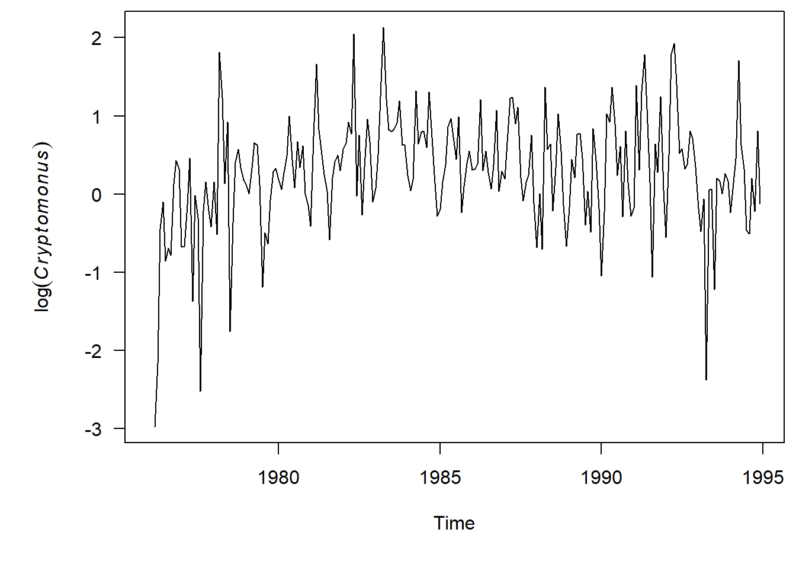
#Plot the ACF
acf(phyto.ts[,"Cryptomonas"], na.action = na.pass, las = 1)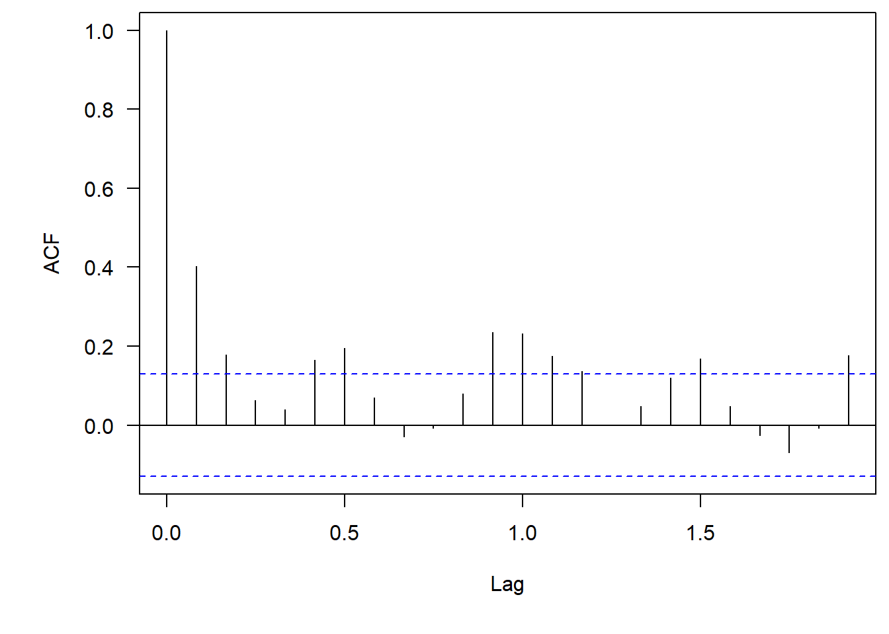
One thing to point out–since we are looking at monthly time series our x-axis has changed to be decimals. So now a Lag = 1 is one year out, where a Lag = 0.5 is 6 months out. It is weird, but that is how these functions work.
#Plot the PCF
pacf(phyto.ts[,"Cryptomonas"], na.action = na.pass, las = 1)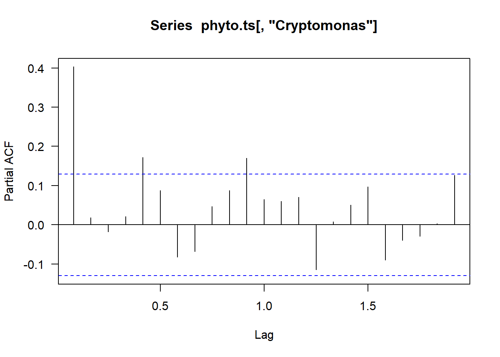
Now that we understand time series and autocorrelation we can get into some simple time series models.
White noise models are time series objects where there are no significant autocorrelations.
White Noise models have to be:
We often see Gaussian white noise models whereby \(w_t \sim N(0, \sigma^2)\)
Let’s take a look at a simulated time series from a White Noise model and it’s associated ACF plot.
\(w_t \sim \text{N}(0,1)\)
A time series \(x_t\) is a random walk if:
So in a random walk the value of \(x\) today, is the value of \(x\) from yesterday plus some white noise.
\(x_t = x_{t-1} + w_t; w_t \sim \text{N}(0,1)\)
The \(x_{t-1}\) component is what makes our random walk an autoregressive (AR) model. Autoregression simply means it is a regression of our response variable against itself at a previous state.
Autoregressive time series models are widely used in ecology to treat a current state of nature as a function of its past selves.
An autoregressive model of order p, or AR(p) is defined as:
\(x_t = x_{t-1} + x_{t-2} + … + x_{t-p} + w_t\) (or error)
So our random walk in the previous example is an AR(1) model as it only relies on the response variable at one previous time step.
\(x_t = x_{t-1} + w_t\)
We can make it an AR(2) model if we include an additional term going two time steps back.
\(x_t = x_{t-1} + x_{t-2} + w_t\)
So on and so forth!
Let’s walk through an example building an autoregressive model with real data and also start thinking about how we would add on covariates.
We’ll work with the phytoplankton data in Lake Washington again.
#Replot the time series
plot.ts(phyto.ts[,"Cryptomonas"], ylab=expression(log(italic(Cryptomonus))), las = 1)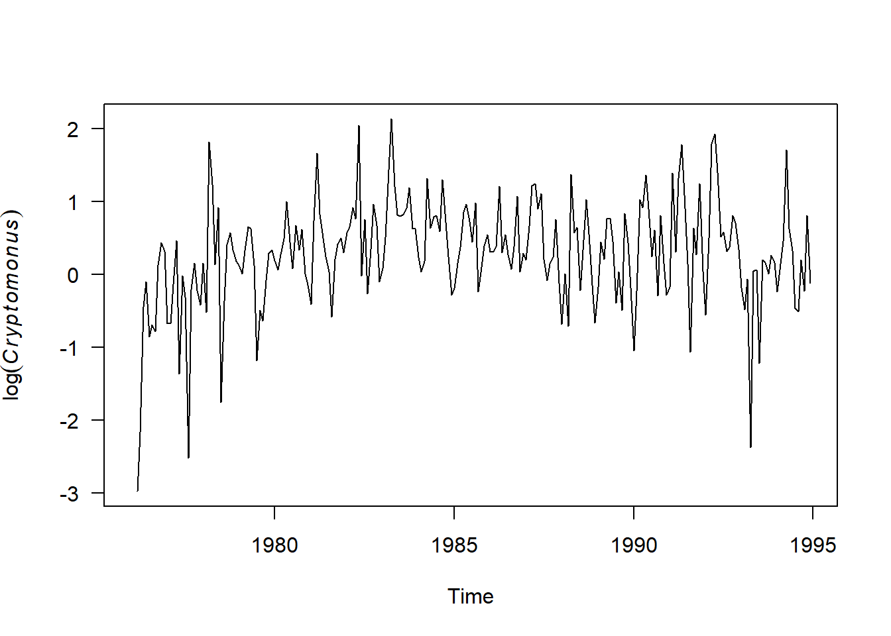
Let’s start by looking at the ACF and PACF plots again
par(mfrow = c(1,2))
#Plot the ACF
acf(phyto[,"Cryptomonas"], na.action = na.pass, las = 1)
#Plot the PACF
pacf(phyto[,"Cryptomonas"], na.action = na.pass, las = 1)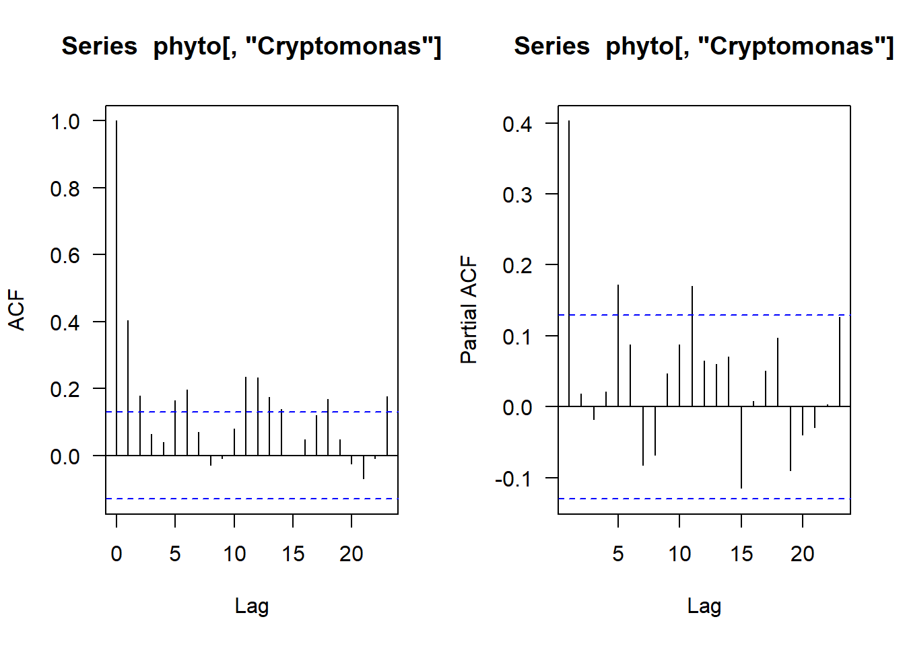
A lot to mull on here! But one thing is clear is that at least one month back there is correlation so let’s start with an AR(1) model.
Let’s test some covariates while we’re at it as well.
colnames(phyto)## [1] "Year" "Month"
## [3] "Temp" "TP"
## [5] "pH" "Cryptomonas"
## [7] "Diatoms" "Greens"
## [9] "Bluegreens" "Unicells"
## [11] "Other.algae" "Conochilus"
## [13] "Cyclops" "Daphnia"
## [15] "Diaptomus" "Epischura"
## [17] "Leptodora" "Neomysis"
## [19] "Non.daphnid.cladocerans" "Non.colonial.rotifers"What might be influencing phytoplanktons? Let’s try using temperature and TP (total phosphorus) (phytoplankton like phosphorus).
We can start building our more complex models by just thinking about basic regressions!
The covariates can also be included at previous states, but we think that the current months temperature and TP will be more influential than the previous months.
\[ phyto_t = \beta_0 + \beta_1*phyto_{t-1} + \beta_1*Temp_t + \beta_2*TP_t + \epsilon\]
And now let’s transform this into actual code. We’ll use a frequentist approach for now.
Our first step is we have to index our previous states properly
class(phyto) #not a ts object and that is ok!! ## [1] "matrix" "array"#Let's data manage to make things more readable
#Pick out the columns we're interested in and turn it into a dataframe so we can call them nicely
phyto.df <- as.data.frame(phyto[,c("Year", "Month", "Temp", "TP", "Cryptomonas")])
#Sometimes working with previous times requires clever indexing here let's test out how we can do that
#proof of concept that indexing is ok on our full dataset
test <- cbind(phyto.df $Cryptomonas[-1], phyto.df $Cryptomonas[-nrow(phyto)]) #offsets the data so t and t-1 line up
colnames(test) <- c("t", "t minus 1")
head(test)## t t minus 1
## [1,] NA NA
## [2,] -2.9775611 NA
## [3,] -2.1642828 -2.9775611
## [4,] -0.4445590 -2.1642828
## [5,] -0.1033656 -0.4445590
## [6,] -0.8557211 -0.1033656#Now lets test some models!!
#No covariates model
ar1 <- lm(phyto.df $Cryptomonas[-1]~phyto.df $Cryptomonas[-nrow(phyto.df )])
summary(ar1)##
## Call:
## lm(formula = phyto.df$Cryptomonas[-1] ~ phyto.df$Cryptomonas[-nrow(phyto.df)])
##
## Residuals:
## Min 1Q Median 3Q Max
## -2.57931 -0.31574 0.00876 0.32357 1.84020
##
## Coefficients:
## Estimate Std. Error t value Pr(>|t|)
## (Intercept) 0.18417 0.04571 4.029 7.69e-05 ***
## phyto.df$Cryptomonas[-nrow(phyto.df)] 0.40358 0.05800 6.958 3.80e-11 ***
## ---
## Signif. codes: 0 '***' 0.001 '**' 0.01 '*' 0.05 '.' 0.1 ' ' 1
##
## Residual standard error: 0.6385 on 223 degrees of freedom
## (2 observations deleted due to missingness)
## Multiple R-squared: 0.1784, Adjusted R-squared: 0.1747
## F-statistic: 48.41 on 1 and 223 DF, p-value: 3.796e-11#Covariates model
ar1.co <- lm(phyto.df $Cryptomonas[-1]~phyto.df $Cryptomonas[-nrow(phyto.df )]+phyto.df $Temp[-1]+phyto.df $TP[-1])
summary(ar1.co)##
## Call:
## lm(formula = phyto.df$Cryptomonas[-1] ~ phyto.df$Cryptomonas[-nrow(phyto.df)] +
## phyto.df$Temp[-1] + phyto.df$TP[-1])
##
## Residuals:
## Min 1Q Median 3Q Max
## -2.57276 -0.32404 0.02855 0.32083 1.70980
##
## Coefficients:
## Estimate Std. Error t value Pr(>|t|)
## (Intercept) 0.27925 0.10795 2.587 0.0103 *
## phyto.df$Cryptomonas[-nrow(phyto.df)] 0.40726 0.05794 7.029 2.56e-11 ***
## phyto.df$Temp[-1] -0.03246 0.05579 -0.582 0.5613
## phyto.df$TP[-1] 0.19824 0.21156 0.937 0.3498
## ---
## Signif. codes: 0 '***' 0.001 '**' 0.01 '*' 0.05 '.' 0.1 ' ' 1
##
## Residual standard error: 0.6366 on 221 degrees of freedom
## (2 observations deleted due to missingness)
## Multiple R-squared: 0.1905, Adjusted R-squared: 0.1795
## F-statistic: 17.34 on 3 and 221 DF, p-value: 3.816e-10Hmm well it looks like temperature and phosphorus both don’t do much… what if we try phosphorus the previous month??
\[ phyto_t = \beta_0 + \beta_1*phyto_{t-1} + \beta_1*Temp_t + \beta_2*TP_{t-1} + \epsilon\]
#Covariates model with phosphorus at t-1
ar1.co.prevp <- lm(phyto.df$Cryptomonas[-1]~phyto.df$Cryptomonas[-nrow(phyto)]+phyto.df$Temp[-1]+phyto.df$TP[-nrow(phyto.df )])
summary(ar1.co.prevp)##
## Call:
## lm(formula = phyto.df$Cryptomonas[-1] ~ phyto.df$Cryptomonas[-nrow(phyto)] +
## phyto.df$Temp[-1] + phyto.df$TP[-nrow(phyto.df)])
##
## Residuals:
## Min 1Q Median 3Q Max
## -2.67938 -0.32459 0.00896 0.32110 1.68448
##
## Coefficients:
## Estimate Std. Error t value Pr(>|t|)
## (Intercept) 0.41477 0.11274 3.679 0.000294 ***
## phyto.df$Cryptomonas[-nrow(phyto)] 0.38627 0.05831 6.625 2.61e-10 ***
## phyto.df$Temp[-1] 0.01887 0.05723 0.330 0.741900
## phyto.df$TP[-nrow(phyto.df)] 0.47958 0.21798 2.200 0.028839 *
## ---
## Signif. codes: 0 '***' 0.001 '**' 0.01 '*' 0.05 '.' 0.1 ' ' 1
##
## Residual standard error: 0.631 on 221 degrees of freedom
## (2 observations deleted due to missingness)
## Multiple R-squared: 0.2047, Adjusted R-squared: 0.1939
## F-statistic: 18.96 on 3 and 221 DF, p-value: 5.586e-11We’re starting to see different things but our R-squared is pretty low, so we’d want to keep workshopping but you’ve successfully ran an AR model!!
What if we potentially add seasonality??
\[ phyto_t = \beta_0 + \beta_1*phyto_{t-1} + \beta_2*phyto_{t-5} + \epsilon\]
#Find the matches of cryptomonas at t and t-1
test1 <- cbind(phyto.df[-1,], phyto.df[-nrow(phyto), c("Cryptomonas")])
colnames(test1) <- c(colnames(test1)[1:5], "t min 1")
#Find the matches of cryptomonas at t and t-5
test2 <- cbind(phyto.df[-(1:5),],
phyto.df[-((nrow(phyto)-4):nrow(phyto)), c("Cryptomonas")]
)
colnames(test2) <- c(colnames(test2)[1:5], "t min 5")
#Merge together
complete <- merge(test1, test2)
complete <- complete[order(complete$Year, complete$Month),] #Reorder our columns
head(complete) #Make sure it's correct## Year Month Temp TP Cryptomonas t min 1 t min 5
## 4 1976 6 0.4326375 -0.7237925 -0.1033656 -0.4445590 NA
## 5 1976 7 1.0279650 -0.8227560 -0.8557211 -0.1033656 NA
## 6 1976 8 1.3758838 -0.7305692 -0.6934779 -0.8557211 -2.9775611
## 7 1976 9 1.1803694 -0.9452238 -0.7821795 -0.6934779 -2.1642828
## 1 1976 10 0.9461218 -0.9689422 0.1254095 -0.7821795 -0.4445590
## 2 1976 11 0.2305633 -0.9134002 0.4321054 0.1254095 -0.1033656#Run the regression
ar1.co.season <- lm(complete$Cryptomonas~complete$`t min 1`+ complete$`t min 5`)
summary(ar1.co.season)##
## Call:
## lm(formula = complete$Cryptomonas ~ complete$`t min 1` + complete$`t min 5`)
##
## Residuals:
## Min 1Q Median 3Q Max
## -2.62785 -0.32789 0.04721 0.33687 1.81677
##
## Coefficients:
## Estimate Std. Error t value Pr(>|t|)
## (Intercept) 0.16206 0.04913 3.299 0.00113 **
## complete$`t min 1` 0.36154 0.06160 5.869 1.62e-08 ***
## complete$`t min 5` 0.15294 0.05724 2.672 0.00811 **
## ---
## Signif. codes: 0 '***' 0.001 '**' 0.01 '*' 0.05 '.' 0.1 ' ' 1
##
## Residual standard error: 0.6265 on 218 degrees of freedom
## (2 observations deleted due to missingness)
## Multiple R-squared: 0.1644, Adjusted R-squared: 0.1568
## F-statistic: 21.45 on 2 and 218 DF, p-value: 3.135e-09This is a rudimentary start, there’s more steps you would want to take if you think you have seasonal data. For example if you have seasonal data and your ACF plots are cyclical you can start using nonlinear models to incorporate the sinusoidal aspects. Time series decomposition is a way to look into noisy time series to try and see if you have seasonal data, or you can move into some more advanced AR models like ARIMA models.
So far we’ve talked about the building blocks of AR models, but there are a lot more ways to build on these models that you might have heard about. We’re not going to cover these today but wanted to highlight they exist and point you to some help pages if you want to learn more.
Instead of using the past values of the response variable in the regression it uses the past errors in the regression. Often used in forecasting! See more here.
ARIMA stands for Autoregressive Integrated Moving Average model. If you find your time series are non-stationary these models have a differencing step to account for it and seasonality. Read more about them here.
State-space models (SSM) assume there is a ‘hidden’, or latent, unobservable state of what we are interested in that we make predictions based on a series of observations. This is often used in a hierarchical Bayesian framework and is a great way to deal with missing data. Let’s say you have a population of trees you’re monitoring from 2018-2023, but because of COVID19 you had to skip monitoring in 2020 and 2021. We assume the unobserved state is the true population each year, which comes from some sort of process that relates to the sampled data from the years we were able to monitor. Then we can create estimates for the true population for each year including 2020 and 2021, but this framework allows us to incorporate more uncertainty than if you simply try to interpolate over the missing years. Some more resources can be found in the lectures here and here.
AR models are widely used in ecology. They are also used frequently beyond ecology - for example, modelling stock risk in financial sectors. AR models are the bread and butter of forecasting. Increasingly as ecologists we are asked to make predictions about the future for management, whether it’s with fire cycles, population dynamics of sensitive species, growth of harmful algal blooms, or whatever else you can think of, AR models are typically the basis in order to make accurate predictions of the future.
A lot of this lecture was based on the “Applied Time Series Analysis in Fisheries and Environmental Science” course at the University of Washington. You can find their webpage here. They have videos and PDF’s of their lectures!
This online textbook will also be one of the first things that pops up when googling time series and AR information.
And if you’re interested in learning more about forecasting, Bob Shriver teaches “Ecological Forecasting” each spring semester - NRES 776.